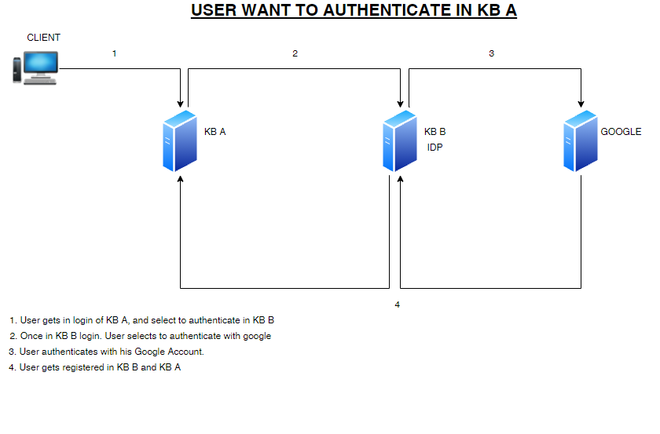

All GAM Authentication scenarios include the possibility of entering a username and password and validating this data against an existing Database. Likewise, this Database, can be hosted in the application’s own Database or in standalone manner, according to the desired combination. Both options will depend on the selected way to use it or the company’s or client’s policies.
The modes to which the GAM can be applied to depend on the environment for which applications are developed or implemented. The options available are Web and Native Mobile.
Prompt for a username and password in a web screen, validating this data against an existing DB and providing the possibility to create new users with their corresponding passwords.
There are different possible scenarios, the following are some of them :
GAM use Example: Private web application
GAM Use Example: Public Application With Some Private Components
If you already have your application which implements security in the traditional way, there are some tips to take into account in order to start using GAM. See How to map Application users to GAM users in existing applications.
At present, the importance of productive applications running on Native Mobile cannot be understated, given their explosive growth. However, even though developing applications with GeneXus for Native Mobile is relatively simple, you can't think of a productive, professional, and reliable application without any security features. One of the reasons why GeneXus includes GAM by default is the ability to quickly implement security for Native Mobile applications.
Like in Web Applications, in Native Mobile Applications one possible scenario is such that all of the Native Mobile objects are private. In another scenario, only some objects are private, and the other have public access.
See the following for details:
See GAM External Authentication Type
In addition to building web applications and Native Mobile applications, GenXus users can build REST Web Services using GeneXus X Evolution 2. Using GAM, these Web Services will be private, and only authorized users will be able to execute their methods.
See HowTo: Develop Secure REST Web Services in GeneXus for details.
It’s a usual scenario, where many applications of the same company, for instance, use the same repository.
See HowTo: Using the same GAM Database by different applications.
Take as an example the scenario where a company has n branches, the same application runs in the different branches, but users have different privileges depending on the branch where the application runs. In this case, the GAM database used will be only one, in order not to duplicate users information (and easy maintenance), but different roles have to be assigned to users depending on the branch where the application runs, so it's necessary to define multiple Repositories in GAM database.
See GAM Multiple Repositories Scenarios for details.
There is the possibility to set a GeneXus Knowledge Base with GAM as an Identity Provider for other Knowledge Bases. This means that if you are already registered in for example KB "A "and want to access KB "B" without having to sign up in both of them, you can use the same user that is in “A” without having to register in “B”.
See GAM remote authentication type for details.
Also, users that use your KB as an IDP, will be able to authenticate themselves through the authentication types you have added to your KB.
This means that, for example, you have set a Google authentication to your web app “A”.
Then, a user of web app “B” can select the Google authentication type of web app “A” to authenticate to “B”.
When you are used as an IDP for other KB, all users of the external KB will be able to authenticate to Google.

See GAM Authentication to see all authentication types you can add to your web app.
| Backlinks | ||
| GAM Authorization Scenarios | GeneXus 17 Upgrade 6 | Toc:GeneXus Access Manager (GAM) |
| Toc:Native Mobile Applications Development |